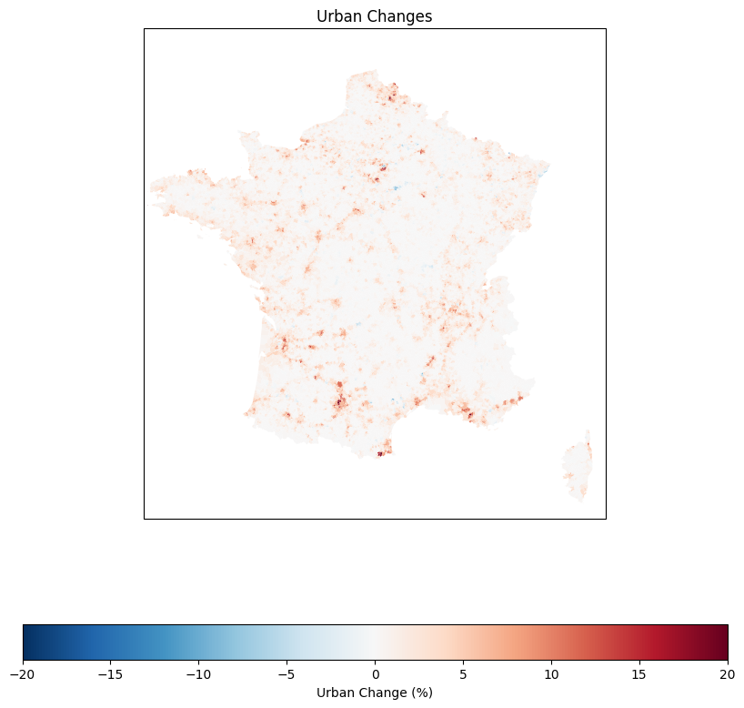

import pandas as pd
import geopandas as gpd
import numpy as np
import matplotlib.pyplot as plt
import xarray as xr
import glob
import matplotlib.pyplot as plt
import seaborn as snsMulti-Hazard Exposure and Urbanization
nuts3 = gpd.read_file('../../data/tiberiu/DATA_MH/LAU_2013.shp')
nuts3 = nuts3[nuts3['CNTRY'] == 'FR' ]
nuts3 = nuts3.to_crs(epsg=3035)
nuts3 = nuts3[nuts3.NUTS3_ID=='FR712']
nuts3['geometry'] = nuts3.buffer(10)nuts3 = gpd.read_file('../../data/tiberiu/DATA_MH/LAU_2013.shp')
nuts3 = nuts3[nuts3['CNTRY'] == 'FR' ]
nuts3_agg = nuts3.dissolve(by='NUTS3_ID', aggfunc='sum')
nuts3_agg = nuts3_agg.to_crs(epsg=3035)[['geometry', 'AREAkm']]
df_nuts3_name = pd.read_excel('C:/Users/colin/Downloads/Ttypologies and local information corresponding to NUTS3.xls', sheet_name='NUTS 3 typologies')
df_nuts3_name.columns = ['NUTS0', 'NUTS3_ID', 'NUTS3_NAME', 'COASTAL', 'NUTS3_TYPE'] + list(df_nuts3_name.columns[5:])
df_nuts3_name = df_nuts3_name[['NUTS3_ID', 'NUTS3_NAME', 'COASTAL', 'NUTS3_TYPE']]
nuts3_agg = nuts3_agg.merge(df_nuts3_name, left_on='NUTS3_ID', right_on='NUTS3_ID', how='left')nuts3_agg| NUTS3_ID | geometry | AREAkm | NUTS3_NAME | COASTAL | NUTS3_TYPE | |
|---|---|---|---|---|---|---|
| 0 | FR101 | POLYGON ((3765312.525 2887897.170, 3764841.783... | 104.921555 | FR101 - Paris | N | Urban region |
| 1 | FR102 | POLYGON ((3766432.461 2808824.030, 3764962.752... | 5927.600688 | FR102 - Seine-et-Marne | N | Intermediate region |
| 2 | FR103 | POLYGON ((3721322.492 2847183.767, 3720681.745... | 2304.720894 | FR103 - Yvelines | N | Urban region |
| 3 | FR104 | POLYGON ((3739974.709 2830354.959, 3740500.269... | 1821.293762 | FR104 - Essonne | N | Urban region |
| 4 | FR105 | POLYGON ((3757443.741 2880225.324, 3757103.459... | 174.766629 | FR105 - Hauts-de-Seine | N | Urban region |
| ... | ... | ... | ... | ... | ... | ... |
| 91 | FR824 | MULTIPOLYGON (((3946089.979 2241075.673, 39450... | 5250.315551 | FR824 - Bouches-du-Rhône | Y | Urban region |
| 92 | FR825 | MULTIPOLYGON (((4014689.280 2218438.989, 40145... | 6032.947673 | FR825 - Var | Y | Intermediate region |
| 93 | FR826 | MULTIPOLYGON (((3973841.611 2307179.866, 39742... | 3577.103564 | FR826 - Vaucluse | N | Intermediate region |
| 94 | FR831 | MULTIPOLYGON (((4258944.006 2026890.824, 42587... | 4018.235489 | FR831 - Corse-du-Sud | Y | Rural region |
| 95 | FR832 | POLYGON ((4271781.382 2089455.583, 4271678.148... | 4710.224474 | FR832 - Haute-Corse | Y | Rural region |
96 rows × 6 columns
France Land-Use Change
lu_files = glob.glob("../../data/Copernicus land-use changes/region_land_use/u2006*.csv")
#load all files an dconcatenate them
df_2006 = pd.concat([pd.read_csv(f) for f in lu_files])
lu_files = glob.glob("../../data/Copernicus land-use changes/region_land_use/u2018*.csv")
df_2018 = pd.concat([pd.read_csv(f) for f in lu_files])
df_2006 = df_2006.sort_values('LAU_ID')
df_2018 = df_2018.sort_values('LAU_ID')
lu_changes = df_2018.copy()
lu_changes[['urban', 'cropland', 'forest', 'wetland']] = df_2018[['urban', 'cropland', 'forest', 'wetland']] - df_2006[['urban', 'cropland', 'forest', 'wetland']]
lu_changes[['urban', 'cropland', 'forest', 'wetland']] = lu_changes[['urban', 'cropland', 'forest', 'wetland']] *100
lu_changes = lu_changes.merge(nuts3[['LAU_ID', 'AREAkm']], left_on='LAU_ID', right_on='LAU_ID', how='left')Descriptive statistics on land-use changes in France in 2018 the mean county has a land use :
print(df_2018[['urban', 'cropland', 'forest', 'wetland']].describe()) urban cropland forest wetland
count 36573.000000 36573.000000 36573.000000 36573.000000
mean 0.067371 0.636251 0.286675 0.002186
std 0.121759 0.264349 0.257631 0.017047
min 0.000000 0.000000 0.000000 0.000000
25% 0.008496 0.456928 0.074177 0.000000
50% 0.028003 0.694994 0.212656 0.000000
75% 0.069613 0.857877 0.444365 0.000000
max 1.000000 1.000000 1.000000 0.661261The descriptive statistics of the land-use changes between 2006 and 2018 in France are as follows:
print(lu_changes[['urban', 'cropland', 'forest', 'wetland']].describe()) urban cropland forest wetland
count 36573.000000 36573.000000 36573.000000 36573.000000
mean 1.052627 -0.978546 -0.153869 0.004875
std 1.863544 2.335823 1.651806 0.256052
min -15.108959 -35.682285 -87.161170 -10.732180
25% 0.000000 -1.534855 -0.153584 0.000000
50% 0.347978 -0.409005 -0.001092 0.000000
75% 1.464388 -0.000061 0.011525 0.000000
max 35.710242 82.618764 16.327019 19.062235#aggregate at the NUTS3 level
nuts3_temp = nuts3_agg.merge(lu_changes[['NUTS3_ID', 'urban', 'cropland', 'forest', 'wetland', 'AREAkm']].groupby('NUTS3_ID').apply(lambda x: pd.Series(np.average(x[['urban', 'cropland', 'forest', 'wetland']], weights=x['AREAkm'], axis=0), index=['urban', 'cropland', 'forest', 'wetland'])).reset_index(), left_on='NUTS3_ID', right_on='NUTS3_ID', how='left')
nuts3_temp[['urban', 'cropland', 'forest', 'wetland']] = nuts3_temp[['urban', 'cropland', 'forest', 'wetland']].fillna(0)
import cartopy.crs as ccrs
import cartopy.feature as cfeature
nuts3_temp = nuts3_temp.to_crs(epsg=4326)
fig, axs = plt.subplots(2,2,figsize=(10, 10), subplot_kw={'projection': ccrs.PlateCarree()})
ax = axs[0,0]
nuts3_agg.boundary.plot(ax=ax, color='black', linewidth=0.5)
nuts3_temp.plot(ax=ax, column='urban', legend=True, legend_kwds={'label': "Urbanization change (%)", 'orientation': "horizontal"})
ax.set_extent([-5, 10, 41, 52])
ax.set_title('Urbanization change (%) by NUTS3 region')
ax = axs[0,1]
nuts3_agg.boundary.plot(ax=ax, color='black', linewidth=0.5)
nuts3_temp.plot(ax=ax, column='cropland', legend=True, legend_kwds={'label': "Cropland change (%)", 'orientation': "horizontal"})
ax.set_extent([-5, 10, 41, 52])
ax.set_title('Cropland change (%) by NUTS3 region')
ax = axs[1,0]
nuts3_agg.boundary.plot(ax=ax, color='black', linewidth=0.5)
nuts3_temp.plot(ax=ax, column='forest', legend=True, legend_kwds={'label': "Forest change (%)", 'orientation': "horizontal"})
ax.set_extent([-5, 10, 41, 52])
ax.set_title('Forest change (%) by NUTS3 region')
ax = axs[1,1]
nuts3_agg.boundary.plot(ax=ax, color='black', linewidth=0.5)
nuts3_temp.plot(ax=ax, column='wetland', legend=True, legend_kwds={'label': "Wetland change (%)", 'orientation': "horizontal"})
ax.set_extent([-5, 10, 41, 52])
ax.set_title('Wetland change (%) by NUTS3 region')C:\Users\colin\AppData\Local\Temp\ipykernel_51568\2664727460.py:2: DeprecationWarning: DataFrameGroupBy.apply operated on the grouping columns. This behavior is deprecated, and in a future version of pandas the grouping columns will be excluded from the operation. Either pass `include_groups=False` to exclude the groupings or explicitly select the grouping columns after groupby to silence this warning.
nuts3_temp = nuts3_agg.merge(lu_changes[['NUTS3_ID', 'urban', 'cropland', 'forest', 'wetland', 'AREAkm']].groupby('NUTS3_ID').apply(lambda x: pd.Series(np.average(x[['urban', 'cropland', 'forest', 'wetland']], weights=x['AREAkm'], axis=0), index=['urban', 'cropland', 'forest', 'wetland'])).reset_index(), left_on='NUTS3_ID', right_on='NUTS3_ID', how='left')Text(0.5, 1.0, 'Wetland change (%) by NUTS3 region')import cartopy.crs as ccrs
import cartopy.feature as cfeature
nuts3_temp = nuts3.merge(lu_changes, left_on='LAU_ID', right_on='LAU_ID', how='left')
fig,ax = plt.subplots(1,1, figsize=(10,10), subplot_kw={'projection': ccrs.PlateCarree()})
nuts3_temp.plot(column='urban', legend=True, cmap='RdBu_r', ax=ax, linewidth=1.2, transform=ccrs.PlateCarree(), legend_kwds={'orientation': 'horizontal', 'label': 'Urban Change (%)'}, vmax=20, vmin=-20)
ax.set_extent([-5, 10, 41, 52], crs=ccrs.PlateCarree())
ax.set_title('Urban Changes')Text(0.5, 1.0, 'Urban Changes')
Socio-economic data
disp_inc_2015 = gpd.read_file('../../data/disp_inc_2015.gpkg')
disp_inc_2015 = disp_inc_2015[disp_inc_2015.ISO=='FRA']disp_inc_2015['Population'] = disp_inc_2015['Population'].astype(float)
disp_inc_2015[disp_inc_2015.Population>(100000)]
lu_changes_socio = lu_changes.copy()
nuts3 = nuts3.to_crs(epsg=4326)
disp_inc_2015 = disp_inc_2015.to_crs(epsg=4326)
disp_centroids = disp_inc_2015.copy()
disp_centroids['geometry'] = disp_centroids.centroid
nuts3_disp = gpd.sjoin(nuts3, disp_centroids, op='contains', how='left').drop_duplicates(subset='COMM_ID')
df_urban = pd.merge(nuts3_disp[['LAU_ID', 'Gini', 'Disp_Inc_PPP_2015','Disp_Inc_PPP', 'Population']], lu_changes_socio, left_on='LAU_ID', right_on='LAU_ID', how='left').drop(columns=['Unnamed: 0'])
df_urban[['Gini', 'Disp_Inc_PPP_2015','Disp_Inc_PPP', 'Population']] = df_urban[['Gini', 'Disp_Inc_PPP_2015','Disp_Inc_PPP', 'Population']].astype(float)C:\Users\colin\AppData\Local\Temp\ipykernel_51568\1509125068.py:7: UserWarning: Geometry is in a geographic CRS. Results from 'centroid' are likely incorrect. Use 'GeoSeries.to_crs()' to re-project geometries to a projected CRS before this operation.
disp_centroids['geometry'] = disp_centroids.centroid
c:\Users\colin\anaconda3\envs\xarray_env\Lib\site-packages\IPython\core\interactiveshell.py:3517: FutureWarning: The `op` parameter is deprecated and will be removed in a future release. Please use the `predicate` parameter instead.
if await self.run_code(code, result, async_=asy):df_urban[['Gini', 'Disp_Inc_PPP_2015','Disp_Inc_PPP', 'Population']].describe()| Gini | Disp_Inc_PPP_2015 | Disp_Inc_PPP | Population | |
|---|---|---|---|---|
| count | 32012.000000 | 32014.000000 | 32014.000000 | 3.201100e+04 |
| mean | 0.255157 | 16311.936786 | 16311.936786 | 1.162861e+03 |
| std | 0.023227 | 1780.258812 | 1780.258812 | 1.181039e+04 |
| min | 0.169356 | 10153.344474 | 10153.344474 | 7.500000e+01 |
| 25% | 0.242161 | 15217.701102 | 15217.701102 | 2.485000e+02 |
| 50% | 0.254309 | 16038.010473 | 16038.010473 | 5.165000e+02 |
| 75% | 0.265959 | 17038.675761 | 17038.675761 | 1.226500e+03 |
| max | 0.492333 | 34105.534118 | 34105.534118 | 2.096399e+06 |
nuts3_temp = nuts3_agg.merge(df_urban[['NUTS3_ID', 'Gini', 'Disp_Inc_PPP_2015','Disp_Inc_PPP', 'Population']].groupby('NUTS3_ID').apply(lambda x: pd.Series(np.average(x[['Gini', 'Disp_Inc_PPP_2015','Disp_Inc_PPP']], weights=x['Population'], axis=0), index=['Gini', 'Disp_Inc_PPP_2015','Disp_Inc_PPP'])).reset_index(), left_on='NUTS3_ID', right_on='NUTS3_ID', how='left')
nuts3_temp = nuts3_agg.merge(df_urban[['NUTS3_ID', 'Gini', 'Disp_Inc_PPP_2015','Disp_Inc_PPP', 'Population']].groupby('NUTS3_ID').mean().reset_index(), left_on='NUTS3_ID', right_on='NUTS3_ID', how='left')
fig, axs = plt.subplots(1,2,figsize=(10, 5), subplot_kw={'projection': ccrs.PlateCarree()})
ax = axs[0]
nuts3_temp = nuts3_temp.to_crs(epsg=4326)
nuts3_agg = nuts3_agg.to_crs(epsg=4326)
nuts3_temp.plot(ax=ax, column='Gini', legend=True, legend_kwds={'label': "Gini", 'orientation': "horizontal"})
ax.set_extent([-5, 10, 41, 52])
ax.set_title('Gini by NUTS3 region')
ax = axs[1]
nuts3_temp.plot(ax=ax, column='Disp_Inc_PPP_2015', legend=True, legend_kwds={'label': "Disposible Income PPP 2015", 'orientation': "horizontal"})
ax.set_extent([-5, 10, 41, 52])
ax.set_title('Disposible Income PPP 2015 by NUTS3 region')C:\Users\colin\AppData\Local\Temp\ipykernel_51568\1358748387.py:1: DeprecationWarning: DataFrameGroupBy.apply operated on the grouping columns. This behavior is deprecated, and in a future version of pandas the grouping columns will be excluded from the operation. Either pass `include_groups=False` to exclude the groupings or explicitly select the grouping columns after groupby to silence this warning.
nuts3_temp = nuts3_agg.merge(df_urban[['NUTS3_ID', 'Gini', 'Disp_Inc_PPP_2015','Disp_Inc_PPP', 'Population']].groupby('NUTS3_ID').apply(lambda x: pd.Series(np.average(x[['Gini', 'Disp_Inc_PPP_2015','Disp_Inc_PPP']], weights=x['Population'], axis=0), index=['Gini', 'Disp_Inc_PPP_2015','Disp_Inc_PPP'])).reset_index(), left_on='NUTS3_ID', right_on='NUTS3_ID', how='left')Text(0.5, 1.0, 'Disposible Income PPP 2015 by NUTS3 region')We have the following correlations between the socio-economic data and the land-use changes in France between 2006 and 2018:
import seaborn as sns
sns.heatmap(round(df_urban[['Gini', 'Disp_Inc_PPP_2015', 'Population', 'urban', 'cropland', 'forest', 'wetland']].corr(),2), annot=True, cmap='coolwarm')Now we will do it and look at the correlation between Gini and urbanization and Disp_Inc_PPP_2015 and urbanization by NUTS3 region in France.
df_corr = df_urban.dropna(subset=['Gini', 'Disp_Inc_PPP_2015', 'Population', 'urban', 'cropland', 'forest', 'wetland'])
df_corr = df_corr[['Gini', 'Disp_Inc_PPP_2015', 'Population', 'urban', 'cropland', 'forest', 'wetland', 'NUTS3_ID']]
df_corr = df_corr.groupby('NUTS3_ID').corr().reset_index()
nuts_temp = nuts3_agg.merge(df_corr[df_corr['level_1']=='urban'][['NUTS3_ID', 'Gini', 'Disp_Inc_PPP_2015']], left_on='NUTS3_ID', right_on = 'NUTS3_ID', how='left')
fig,axs = plt.subplots(1,2, figsize=(10,10), subplot_kw={'projection': ccrs.PlateCarree()})
nuts_temp = nuts_temp.to_crs(epsg=4326)
nuts3_agg = nuts3_agg.to_crs(epsg=4326)
ax = axs[0]
nuts3_agg.boundary.plot(ax=ax, color='black', linewidth=0.5)
nuts_temp.plot(ax=ax, column='Gini', legend=True, legend_kwds={'label': "Gini", 'orientation': "horizontal"})
ax.set_extent([-5, 10, 41, 52])
ax.set_title('Gini correlation with Urban Change')
ax = axs[1]
nuts3_agg.boundary.plot(ax=ax, color='black', linewidth=0.5)
nuts_temp.plot(ax=ax, column='Disp_Inc_PPP_2015', legend=True, legend_kwds={'label': "Disposible Income PPP 2015", 'orientation': "horizontal"})
ax.set_extent([-5, 10, 41, 52])
ax.set_title('Disposible Income PPP 2015 correlation with Urban Change')Text(0.5, 1.0, 'Disposible Income PPP 2015 correlation with Urban Change')df_corr = df_corr[df_corr['level_1']=='urban']
df_corr['NUTS3_TYPE'] = df_corr['NUTS3_ID'].apply(lambda x: nuts3_agg[nuts3_agg.NUTS3_ID==x].NUTS3_TYPE.values[0])fig,ax = plt.subplots(1,1, figsize=(10,10), subplot_kw={'projection': ccrs.PlateCarree()})
nuts3_agg.boundary.plot(ax =ax ,color='black', linewidth=0.5)
nuts3_agg.plot(ax=ax, column='NUTS3_TYPE', legend=True, legend_kwds={'bbox_to_anchor': (1, 1), 'loc': 'upper left', 'title': 'NUTS3 Type'})
ax.set_extent([-5, 10, 41, 52])
ax.set_title('NUTS3 type')Text(0.5, 1.0, 'NUTS3 type')df_corr[['Gini', 'Disp_Inc_PPP_2015', 'NUTS3_TYPE']].groupby('NUTS3_TYPE').mean()| Gini | Disp_Inc_PPP_2015 | |
|---|---|---|
| NUTS3_TYPE | ||
| Intermediate region | 0.003990 | 0.241770 |
| Rural region | -0.023764 | 0.293739 |
| Urban region | -0.137178 | 0.084615 |
Interesting to see that in the rural regions, the urbanization rate is positively correlated with the disposable income per capita, while in the urban regions, the urbanization rate is negatively correlated with the Gini index. The urbanization rate does not seem to be driven by the same factors in rural and urban regions.
Possible explanation: - In rural regions, attracting more people to the region might be a way to increase the disposable income per capita or the reverse might be true, that the increase in disposable income per capita is attracting more people to the region. - In urban regions, much more areas are already urbanized. Urbanization happens in the places where the Gini index is lower, which might be a sign of gentrification.
Exposition Data from Spatial identification of regions exposed to multi-hazards at the pan-European level
population_exposed = pd.read_excel('../../data/tiberiu/DATA_MH/Population%.xlsx')
population_exposed = population_exposed[population_exposed['CNTR_ID'].str.startswith('FR')]
population_exposed = population_exposed.merge(nuts3[['LAU_ID', 'NUTS3_ID', 'AREAkm']], left_on='LAU_ID', right_on='LAU_ID', how='left')desc = population_exposed[['pop%_CFL', 'pop%_EQ', 'pop%_FL', 'pop%_LNDSL', 'pop%_SUBS', 'pop%_WUI']].describe()
desc.iloc[0] = desc.iloc[0] * 100 / population_exposed.shape[0]
desc| pop%_CFL | pop%_EQ | pop%_FL | pop%_LNDSL | pop%_SUBS | pop%_WUI | |
|---|---|---|---|---|---|---|
| count | 2.663167 | 13.936511 | 20.126870 | 39.080743 | 65.061658 | 3.822492 |
| mean | 18.996411 | 0.057112 | 11.538436 | 12.538501 | 21.010166 | 48.221470 |
| std | 29.529729 | 0.158942 | 18.310732 | 13.220413 | 37.675972 | 34.257396 |
| min | 0.000000 | 0.000000 | 0.000000 | 0.000000 | 0.000000 | 0.000000 |
| 25% | 0.565679 | 0.000000 | 0.436418 | 1.723645 | 0.000000 | 12.699130 |
| 50% | 4.392032 | 0.000000 | 3.522251 | 8.861211 | 0.000000 | 50.006563 |
| 75% | 22.026162 | 0.000000 | 14.337390 | 19.885606 | 18.408424 | 79.948898 |
| max | 100.000000 | 0.620000 | 100.000000 | 100.000000 | 100.000000 | 100.000000 |
nuts3_temp = population_exposed[['NUTS3_ID', 'pop%_CFL', 'pop%_EQ', 'pop%_FL', 'pop%_LNDSL', 'pop%_SUBS', 'pop%_WUI', 'AREAkm']].fillna(0).groupby('NUTS3_ID').apply(lambda x: pd.Series(np.average(x[['pop%_CFL', 'pop%_EQ', 'pop%_FL', 'pop%_LNDSL', 'pop%_SUBS', 'pop%_WUI']], weights=x['AREAkm'], axis=0), index=['pop%_CFL', 'pop%_EQ', 'pop%_FL', 'pop%_LNDSL', 'pop%_SUBS', 'pop%_WUI'])).reset_index()
nuts3_temp = nuts3_agg.merge(nuts3_temp, left_on='NUTS3_ID',
right_on='NUTS3_ID', how='left')
nuts3_temp = nuts3_temp.to_crs(epsg=4326)
fig, axs = plt.subplots(2,3,figsize=(15, 10), subplot_kw={'projection': ccrs.PlateCarree()})
var_list = ['pop%_CFL', 'pop%_EQ', 'pop%_FL', 'pop%_LNDSL', 'pop%_SUBS', 'pop%_WUI']
for var in var_list:
ax = axs[var_list.index(var) // 3, var_list.index(var) % 3]
nuts3_agg.boundary.plot(ax=ax, color='black', linewidth=0.5)
nuts3_temp.plot(ax=ax, column=var, legend=True, legend_kwds={'label': var, 'orientation': "horizontal"})
ax.set_extent([-5, 10, 41, 52])
ax.set_title(var)C:\Users\colin\AppData\Local\Temp\ipykernel_51568\3311289089.py:1: DeprecationWarning: DataFrameGroupBy.apply operated on the grouping columns. This behavior is deprecated, and in a future version of pandas the grouping columns will be excluded from the operation. Either pass `include_groups=False` to exclude the groupings or explicitly select the grouping columns after groupby to silence this warning.
nuts3_temp = population_exposed[['NUTS3_ID', 'pop%_CFL', 'pop%_EQ', 'pop%_FL', 'pop%_LNDSL', 'pop%_SUBS', 'pop%_WUI', 'AREAkm']].fillna(0).groupby('NUTS3_ID').apply(lambda x: pd.Series(np.average(x[['pop%_CFL', 'pop%_EQ', 'pop%_FL', 'pop%_LNDSL', 'pop%_SUBS', 'pop%_WUI']], weights=x['AREAkm'], axis=0), index=['pop%_CFL', 'pop%_EQ', 'pop%_FL', 'pop%_LNDSL', 'pop%_SUBS', 'pop%_WUI'])).reset_index()
nuts3_temp[['pop%_CFL', 'pop%_EQ', 'pop%_FL', 'pop%_LNDSL', 'pop%_SUBS', 'pop%_WUI', 'NUTS3_TYPE']].groupby('NUTS3_TYPE').mean()| pop%_CFL | pop%_EQ | pop%_FL | pop%_LNDSL | pop%_SUBS | pop%_WUI | |
|---|---|---|---|---|---|---|
| NUTS3_TYPE | ||||||
| Intermediate region | 0.405872 | 0.014597 | 2.302896 | 6.096409 | 13.035358 | 4.270101 |
| Rural region | 0.415712 | 0.006225 | 2.010725 | 5.953586 | 10.745887 | 2.682079 |
| Urban region | 1.351512 | 0.008972 | 4.570900 | 4.278902 | 3.917138 | 5.097406 |
# Bootstrap resampling function
def bootstrap_ci(data1, data2, n_bootstrap=1000, ci=95):
boot_diffs = []
n1, n2 = len(data1), len(data2)
for _ in range(n_bootstrap):
sample1 = np.random.choice(data1, n1, replace=True)
sample2 = np.random.choice(data2, n2, replace=True)
boot_diffs.append(sample1.mean() - sample2.mean())
lower = np.percentile(boot_diffs, (100 - ci) / 2)
upper = np.percentile(boot_diffs, 100 - (100 - ci) / 2)
return lower, upper#for CF check if the mean urban wetland change is higher for the counties exposed vs the ones not exposed
population_exposed = population_exposed.merge(lu_changes, left_on='LAU_ID', right_on='LAU_ID', how='left')
mean_diff = population_exposed.dropna(subset=['pop%_CFL'])['urban'].mean() - population_exposed['urban'].mean()
conf_interval = 1.96 * (population_exposed.dropna(subset=['pop%_CFL'])['urban'].std() / np.sqrt(len(population_exposed.dropna(subset=['pop%_CFL']))))
print(f"Mean difference for CFL: {mean_diff}, 95% CI: [{mean_diff - conf_interval}, {mean_diff + conf_interval}]")
mean_diff = population_exposed.dropna(subset=['pop%_FL'])['urban'].mean() - population_exposed['urban'].mean()
conf_interval = 1.96 * (population_exposed.dropna(subset=['pop%_FL'])['urban'].std() / np.sqrt(len(population_exposed.dropna(subset=['pop%_FL']))))
print(f"Mean difference for FL: {mean_diff}, 95% CI: [{mean_diff - conf_interval}, {mean_diff + conf_interval}]")
mean_diff = population_exposed.dropna(subset=['pop%_WUI'])['urban'].mean() - population_exposed['urban'].mean()
conf_interval = 1.96 * (population_exposed.dropna(subset=['pop%_WUI'])['urban'].std() / np.sqrt(len(population_exposed.dropna(subset=['pop%_WUI']))))
print(f"Mean difference for WUI: {mean_diff}, 95% CI: [{mean_diff - conf_interval}, {mean_diff + conf_interval}]")
mean_diff = population_exposed.dropna(subset=['pop%_LNDSL'])['urban'].mean() - population_exposed['urban'].mean()
conf_interval = 1.96 * (population_exposed.dropna(subset=['pop%_LNDSL'])['urban'].std() / np.sqrt(len(population_exposed.dropna(subset=['pop%_LNDSL']))))
print(f"Mean difference for LNDSL: {mean_diff}, 95% CI: [{mean_diff - conf_interval}, {mean_diff + conf_interval}]")
mean_diff = population_exposed.dropna(subset=['pop%_EQ'])['urban'].mean() - population_exposed['urban'].mean()
conf_interval = 1.96 * (population_exposed.dropna(subset=['pop%_EQ'])['urban'].std() / np.sqrt(len(population_exposed.dropna(subset=['pop%_EQ']))))
print(f"Mean difference for EQ: {mean_diff}, 95% CI: [{mean_diff - conf_interval}, {mean_diff + conf_interval}]")
mean_diff = population_exposed.dropna(subset=['pop%_SUBS'])['urban'].mean() - population_exposed['urban'].mean()
conf_interval = 1.96 * (population_exposed.dropna(subset=['pop%_SUBS'])['urban'].std() / np.sqrt(len(population_exposed.dropna(subset=['pop%_SUBS']))))
print(f"Mean difference for SUBS: {mean_diff}, 95% CI: [{mean_diff - conf_interval}, {mean_diff + conf_interval}]")
Mean difference for CFL: 0.8790953030393553, 95% CI: [0.7444091729129432, 1.0137814331657675]
Mean difference for FL: 0.46378824521397566, 95% CI: [0.4124607861876011, 0.5151157042403501]
Mean difference for WUI: 1.1560496870641936, 95% CI: [1.0088252573831475, 1.3032741167452397]
Mean difference for LNDSL: 0.058408101100205556, 95% CI: [0.02663176955608055, 0.09018443264433057]
Mean difference for EQ: 0.12010555372136777, 95% CI: [0.06790928332386803, 0.17230182411886752]
Mean difference for SUBS: 0.2104839463168986, 95% CI: [0.18535175911720372, 0.23561613351659347]Here we tested the difference of urbanization rate between the exposed counties and the mean rate of urbanization.
We did the same analysis but with the 10% most exposed counties instead of all the exposed counties.
import matplotlib.pyplot as plt
import numpy as np
# Lists to store results
vars_labels = ['pop%_CFL', 'pop%_FL', 'pop%_WUI', 'pop%_LNDSL', 'pop%_EQ', 'pop%_SUBS']
deltas, ci_lowers, ci_uppers = [], [], []
deltas_bis, ci_lowers_bis, ci_uppers_bis = [], [], []
for var in vars_labels:
mean_exposed = population_exposed.loc[population_exposed[var] > 0, 'urban'].mean()
mean_all = population_exposed['urban'].mean()
data_exposed = population_exposed.loc[population_exposed[var] > 0, 'urban']
thr = population_exposed.loc[population_exposed[var] > 0, var].quantile(0.90)
data_q90 = population_exposed.loc[population_exposed[var] > thr, 'urban']
delta = mean_exposed - mean_all
lower, upper = bootstrap_ci(data_exposed, population_exposed['urban'])
deltas.append(delta)
ci_lowers.append(lower)
ci_uppers.append(upper)
delta_bis = data_q90.mean() - mean_all
lower_bis, upper_bis = bootstrap_ci(data_q90, population_exposed['urban'])
deltas_bis.append(delta_bis)
ci_lowers_bis.append(lower_bis)
ci_uppers_bis.append(upper_bis)
# Plotting function
def plot_deltas_with_ci(labels, deltas, lowers, uppers, title):
x = np.arange(len(labels))
ci_err = [np.array(deltas) - np.array(lowers), np.array(uppers) - np.array(deltas)]
plt.figure(figsize=(10, 6))
plt.bar(x, deltas, yerr=ci_err, capsize=5, alpha=0.7)
plt.axhline(0, color='gray', linestyle='--')
plt.xticks(x, labels, rotation=45)
plt.ylabel('Mean Urban Change (Delta)')
plt.title(title)
plt.tight_layout()
plt.show()
# Plot for all exposed areas
plot_deltas_with_ci(vars_labels, deltas, ci_lowers, ci_uppers,
'Mean Urban Change (All Exposed Areas)')
# Plot for top 10% exposed areas
plot_deltas_with_ci(vars_labels, deltas_bis, ci_lowers_bis, ci_uppers_bis,
'Mean Urban Change (Top 10% Exposed Areas)')C:\Users\colin\AppData\Local\Temp\ipykernel_51568\281357570.py:9: RuntimeWarning: Mean of empty slice.
boot_diffs.append(sample1.mean() - sample2.mean())
c:\Users\colin\anaconda3\envs\xarray_env\Lib\site-packages\numpy\core\_methods.py:129: RuntimeWarning: invalid value encountered in scalar divide
ret = ret.dtype.type(ret / rcount)The graphs show that the exposed counties have a higher rate of urbanization than the mean rate of urbanization in France. But if we look at the 10% most exposed counties, the rate of urbanization is not as significant as for all the exposed counties. It can signify that the most exposed counties are not the most urbanized counties, even if the overall trend is that the exposed counties are more urbanized than the mean rate of urbanization.
Now compare correlation also with income data
population_exposed_urban = population_exposed.merge(df_urban, left_on='LAU_ID', right_on='LAU_ID', how='left')
# population_exposed_urban[['pop%_CFL', 'pop%_EQ', 'pop%_FL', 'pop%_LNDSL', 'pop%_SUBS', 'pop%_WUI']] = population_exposed_urban[['pop%_CFL', 'pop%_EQ', 'pop%_FL', 'pop%_LNDSL', 'pop%_SUBS', 'pop%_WUI']].fillna(0)
var_list = ['pop%_CFL', 'pop%_EQ', 'pop%_FL', 'pop%_LNDSL', 'pop%_SUBS', 'pop%_WUI']
df_corr_gini = []
df_corr_disp = []
for var in var_list:
df_corr_gini.append(population_exposed_urban[['Gini', var]].dropna().corr().iloc[0,1])
df_corr_disp.append(population_exposed_urban[['Disp_Inc_PPP_2015', var]].dropna().corr().iloc[0,1])#plot
fig, axs = plt.subplots(1,2, figsize=(12,5))
ax = axs[0]
ax.bar(var_list, df_corr_gini)
ax.set_title('Gini Correlation')
ax.set_ylabel('Correlation')
ax.set_xlabel('Exposure Variable')
ax.set_xticklabels(var_list, rotation=45)
ax = axs[1]
ax.bar(var_list, df_corr_disp)
ax.set_title('Disposable Income Correlation')
ax.set_ylabel('Correlation')
ax.set_xlabel('Exposure Variable')
ax.set_xticklabels(var_list, rotation=45)C:\Users\colin\AppData\Local\Temp\ipykernel_51568\2137756210.py:9: UserWarning: set_ticklabels() should only be used with a fixed number of ticks, i.e. after set_ticks() or using a FixedLocator.
ax.set_xticklabels(var_list, rotation=45)
C:\Users\colin\AppData\Local\Temp\ipykernel_51568\2137756210.py:16: UserWarning: set_ticklabels() should only be used with a fixed number of ticks, i.e. after set_ticks() or using a FixedLocator.
ax.set_xticklabels(var_list, rotation=45)[Text(0, 0, 'pop%_CFL'),
Text(1, 0, 'pop%_EQ'),
Text(2, 0, 'pop%_FL'),
Text(3, 0, 'pop%_LNDSL'),
Text(4, 0, 'pop%_SUBS'),
Text(5, 0, 'pop%_WUI')]
var_list = ['pop%_CFL', 'pop%_EQ', 'pop%_FL', 'pop%_LNDSL', 'pop%_SUBS', 'pop%_WUI']
df_corr_gini = []
df_corr_disp = []
for var in var_list:
temp_gini = []
temp_disp = []
for id in population_exposed_urban['NUTS3_ID'].unique():
temp_gini.append(population_exposed_urban[population_exposed_urban['NUTS3_ID']==id][['Gini', var]].dropna().corr().iloc[0,1])
temp_disp.append(population_exposed_urban[population_exposed_urban['NUTS3_ID']==id][['Disp_Inc_PPP_2015', var]].dropna().corr().iloc[0,1])
df_corr_gini.append((temp_gini))
df_corr_disp.append((temp_disp))df_corr_gini = pd.DataFrame(df_corr_gini, columns=population_exposed_urban['NUTS3_ID'].unique())
df_corr_disp = pd.DataFrame(df_corr_disp, columns=population_exposed_urban['NUTS3_ID'].unique())
df_corr_gini['Var'] = var_list
df_corr_disp['Var'] = var_list
df_corr_gini = df_corr_gini[['Var'] + list(population_exposed_urban['NUTS3_ID'].unique())]
df_corr_disp = df_corr_disp[['Var'] + list(population_exposed_urban['NUTS3_ID'].unique())]
df_corr_gini = pd.melt(df_corr_gini, id_vars='Var', var_name='NUTS3_ID', value_name='Correlation')
df_corr_disp = pd.melt(df_corr_disp, id_vars='Var', var_name='NUTS3_ID', value_name='Correlation')
df_corr_gini['NUTS3_TYPE'] = df_corr_gini['NUTS3_ID'].apply(lambda x: nuts3_agg[nuts3_agg.NUTS3_ID==x].NUTS3_TYPE.values[0])
df_corr_disp['NUTS3_TYPE'] = df_corr_disp['NUTS3_ID'].apply(lambda x: nuts3_agg[nuts3_agg.NUTS3_ID==x].NUTS3_TYPE.values[0])#plot
fig, axs = plt.subplots(1,2, figsize=(12,5))
ax = axs[0]
ax.bar(var_list, df_corr_gini[['Var', 'Correlation']].groupby('Var').mean()['Correlation'])
ax.set_title('Gini Correlation')
ax.set_ylabel('Correlation')
ax.set_xlabel('Exposure Variable')
ax.set_xticklabels(var_list, rotation=45)
ax = axs[1]
ax.bar(var_list, df_corr_disp[['Var', 'Correlation']].groupby('Var').mean()['Correlation'])
ax.set_title('Disposable Income Correlation')
ax.set_ylabel('Correlation')
ax.set_xlabel('Exposure Variable')
ax.set_xticklabels(var_list, rotation=45)C:\Users\colin\AppData\Local\Temp\ipykernel_51568\1644686019.py:9: UserWarning: set_ticklabels() should only be used with a fixed number of ticks, i.e. after set_ticks() or using a FixedLocator.
ax.set_xticklabels(var_list, rotation=45)
C:\Users\colin\AppData\Local\Temp\ipykernel_51568\1644686019.py:16: UserWarning: set_ticklabels() should only be used with a fixed number of ticks, i.e. after set_ticks() or using a FixedLocator.
ax.set_xticklabels(var_list, rotation=45)[Text(0, 0, 'pop%_CFL'),
Text(1, 0, 'pop%_EQ'),
Text(2, 0, 'pop%_FL'),
Text(3, 0, 'pop%_LNDSL'),
Text(4, 0, 'pop%_SUBS'),
Text(5, 0, 'pop%_WUI')]#plot
fig, axs = plt.subplots(1,2, figsize=(10,5))
ax = axs[0]
sns.boxplot(data=df_corr_gini, x='Var', y='Correlation', ax=ax, hue='NUTS3_TYPE')
ax.set_title('Gini Correlation')
ax.set_ylabel('Correlation')
ax.set_xlabel('Exposure Variable')
ax.set_xticklabels(var_list, rotation=45)
ax = axs[1]
sns.boxplot(data=df_corr_disp, x='Var', y='Correlation', ax=ax, hue='NUTS3_TYPE')
ax.set_title('Disposable Income Correlation')
ax.set_ylabel('Correlation')
ax.set_xlabel('Exposure Variable')
ax.set_xticklabels(var_list, rotation=45)C:\Users\colin\AppData\Local\Temp\ipykernel_51568\3648303877.py:10: UserWarning: set_ticklabels() should only be used with a fixed number of ticks, i.e. after set_ticks() or using a FixedLocator.
ax.set_xticklabels(var_list, rotation=45)
C:\Users\colin\AppData\Local\Temp\ipykernel_51568\3648303877.py:17: UserWarning: set_ticklabels() should only be used with a fixed number of ticks, i.e. after set_ticks() or using a FixedLocator.
ax.set_xticklabels(var_list, rotation=45)[Text(0, 0, 'pop%_CFL'),
Text(1, 0, 'pop%_EQ'),
Text(2, 0, 'pop%_FL'),
Text(3, 0, 'pop%_LNDSL'),
Text(4, 0, 'pop%_SUBS'),
Text(5, 0, 'pop%_WUI')]Now with climate data
clim_df = pd.read_csv('../../data/indicesQ50_25021114242922763.txt', sep=';', comment='#', header=None)
clim_df.columns = ['index', 'lat', 'lon', 'scenario', 'tasmax', 'day30', 'pr_cum', 'wf_risk', 'droughts_day', 'nan']
clim_df = clim_df.drop('nan', axis=1)
#map the data_new to each county in the shapefile based on the closest lat lon
from scipy.spatial import distance
def closest_node(node, nodes):
closest_index = distance.cdist([node], nodes).argmin()
return closest_index
clim_shp = nuts3.copy()
clim_shp = clim_shp.to_crs(epsg=4326)
clim_shp['lat'] = clim_shp.geometry.centroid.y
clim_shp['lon'] = clim_shp.geometry.centroid.x
clim_shp['index'] = clim_shp.apply(lambda x: closest_node([x['lat'], x['lon']], clim_df[['lat', 'lon']].values), axis=1)
C:\Users\colin\AppData\Local\Temp\ipykernel_51568\1413295237.py:9: UserWarning: Geometry is in a geographic CRS. Results from 'centroid' are likely incorrect. Use 'GeoSeries.to_crs()' to re-project geometries to a projected CRS before this operation.
clim_shp['lat'] = clim_shp.geometry.centroid.y
C:\Users\colin\AppData\Local\Temp\ipykernel_51568\1413295237.py:10: UserWarning: Geometry is in a geographic CRS. Results from 'centroid' are likely incorrect. Use 'GeoSeries.to_crs()' to re-project geometries to a projected CRS before this operation.
clim_shp['lon'] = clim_shp.geometry.centroid.xclim_shp['pr_cum'] = clim_shp['index'].apply(lambda x: clim_df.loc[x, 'pr_cum'])
clim_shp['tasmax'] = clim_shp['index'].apply(lambda x: clim_df.loc[x, 'tasmax'])
clim_shp['wf_risk'] = clim_shp['index'].apply(lambda x: clim_df.loc[x, 'wf_risk'])
clim_shp['droughts_day'] = clim_shp['index'].apply(lambda x: clim_df.loc[x, 'droughts_day'])
clim_shp['day30'] = clim_shp['index'].apply(lambda x: clim_df.loc[x, 'day30'])
clim_shp['decile_pr_cum'] = pd.qcut(clim_shp['pr_cum'], 10, labels=False)
clim_shp['decile_tasmax'] = pd.qcut(clim_shp['tasmax'], 10, labels=False)
clim_shp['decile_wf_risk'] = pd.qcut(clim_shp['wf_risk'], 10, labels=False, duplicates='drop')
clim_shp['decile_droughts_day'] = pd.qcut(clim_shp['droughts_day'], 10, labels=False)
clim_shp['decile_day30'] = pd.qcut(clim_shp['day30'], 10, labels=False)clim_shp[['tasmax', 'pr_cum', 'wf_risk', 'droughts_day', 'day30']].describe()| tasmax | pr_cum | wf_risk | droughts_day | day30 | |
|---|---|---|---|---|---|
| count | 36573.000000 | 36573.000000 | 36573.000000 | 36573.000000 | 36573.000000 |
| mean | 22.717501 | 41.716254 | 2.017417 | 88.524267 | 7.972171 |
| std | 2.046568 | 14.294383 | 4.586476 | 36.785674 | 6.309333 |
| min | 7.510000 | 26.640000 | 0.000000 | 0.000000 | 0.000000 |
| 25% | 21.520000 | 33.050000 | 0.000000 | 63.000000 | 3.500000 |
| 50% | 22.780000 | 36.870000 | 1.000000 | 92.000000 | 6.500000 |
| 75% | 23.900000 | 44.270000 | 2.000000 | 115.000000 | 10.500000 |
| max | 29.490000 | 178.530000 | 60.000000 | 239.000000 | 49.600000 |
clim_agg = clim_shp.groupby('NUTS3_ID').apply(lambda x: pd.Series(np.average(x[['tasmax', 'day30', 'pr_cum', 'wf_risk', 'droughts_day']], weights=x['AREAkm'], axis=0), index=['tasmax', 'day30', 'pr_cum', 'wf_risk', 'droughts_day'])).reset_index()
clim_agg = nuts3_agg.merge(clim_agg, left_on='NUTS3_ID', right_on='NUTS3_ID', how='left')
fig, axs = plt.subplots(1,5,figsize=(20, 10), subplot_kw={'projection': ccrs.PlateCarree()})
var_list = ['tasmax', 'day30', 'pr_cum', 'wf_risk', 'droughts_day']
for var in var_list:
ax = axs[var_list.index(var)]
clim_agg.plot(ax=ax, column=var, legend=True, legend_kwds={'label': var, 'orientation': "horizontal"})
ax.set_extent([-5, 10, 41, 52])
ax.set_title(var)C:\Users\colin\AppData\Local\Temp\ipykernel_51568\559969990.py:1: DeprecationWarning: DataFrameGroupBy.apply operated on the grouping columns. This behavior is deprecated, and in a future version of pandas the grouping columns will be excluded from the operation. Either pass `include_groups=False` to exclude the groupings or explicitly select the grouping columns after groupby to silence this warning.
clim_agg = clim_shp.groupby('NUTS3_ID').apply(lambda x: pd.Series(np.average(x[['tasmax', 'day30', 'pr_cum', 'wf_risk', 'droughts_day']], weights=x['AREAkm'], axis=0), index=['tasmax', 'day30', 'pr_cum', 'wf_risk', 'droughts_day'])).reset_index()clim_df = clim_shp[['LAU_ID', 'AREAkm', 'tasmax', 'day30', 'pr_cum', 'wf_risk', 'droughts_day']]
clim_df = clim_df.merge(df_urban.drop(columns='AREAkm'), left_on='LAU_ID', right_on='LAU_ID', how='left')
clim_df_corr = clim_df[['tasmax', 'day30', 'pr_cum', 'wf_risk', 'droughts_day', 'Gini', 'Disp_Inc_PPP_2015', 'urban', 'cropland', 'forest', 'wetland']].corr()
# nan_corr = ['urban', 'cropland', 'forest', 'wetland']
# for var in nan_corr:
# for var2 in nan_corr:
# clim_df_corr.loc[var, var2] = np.nan
# nan_corr = ['tasmax', 'day30', 'pr_cum', 'wf_risk', 'droughts_day']
# for var in nan_corr:
# for var2 in nan_corr:
# clim_df_corr.loc[var, var2] = np.nan
# clim_df_corr[clim_df_corr==1] = np.nan
clim_df_corr=clim_df_corr.sort_index()
clim_df_corr = clim_df_corr.sort_index(axis=1)
fig, ax = plt.subplots(1,1, figsize=(10,10))
sns.heatmap(round(clim_df_corr,2), annot=True, cmap='coolwarm', ax=ax, vmin=-1, vmax=1)
ax.set_title('Correlation Matrix Between Climate and Socioeconomic Variables')Text(0.5, 1.0, 'Correlation Matrix Between Climate and Socioeconomic Variables')df_corr = clim_df.dropna(subset=['tasmax', 'day30', 'pr_cum', 'wf_risk', 'droughts_day', 'Gini', 'Disp_Inc_PPP_2015', 'urban', 'cropland', 'forest', 'wetland'])
df_corr = df_corr[['NUTS3_ID', 'tasmax', 'day30', 'pr_cum', 'wf_risk', 'droughts_day', 'Gini', 'Disp_Inc_PPP_2015', 'urban', 'cropland', 'forest', 'wetland']].groupby('NUTS3_ID').corr().reset_index()
df_corr = df_corr.drop(columns='NUTS3_ID').groupby('level_1').mean()
df_corr = df_corr.sort_index( )
df_corr = df_corr.sort_index(axis=1)
# nan_corr = ['urban', 'cropland', 'forest', 'wetland']
# for var in nan_corr:
# for var2 in nan_corr:
# df_corr.loc[var, var2] = np.nan
# nan_corr = ['tasmax', 'day30', 'pr_cum', 'wf_risk', 'droughts_day']
# for var in nan_corr:
# for var2 in nan_corr:
# df_corr.loc[var, var2] = np.nan
# df_corr[df_corr==1] = np.nan
fig, ax = plt.subplots(1,1, figsize=(10,10))
ax.set_title('Correlation Matrix Between Climate and Socioeconomic Variables')
sns.heatmap(round(df_corr,2), annot=True, cmap='coolwarm', ax=ax, vmin=-1, vmax=1)df_corr = clim_df.dropna(subset=['tasmax', 'day30', 'pr_cum', 'wf_risk', 'droughts_day', 'Gini', 'Disp_Inc_PPP_2015', 'urban', 'cropland', 'forest', 'wetland'])
df_corr = df_corr[['NUTS3_ID', 'tasmax', 'day30', 'pr_cum', 'wf_risk', 'droughts_day', 'Gini', 'Disp_Inc_PPP_2015', 'urban', 'cropland', 'forest', 'wetland']].groupby('NUTS3_ID').corr().reset_index()
df_corr['NUTS3_TYPE'] = df_corr['NUTS3_ID'].apply(lambda x: nuts3_agg[nuts3_agg.NUTS3_ID==x].NUTS3_TYPE.values[0])
# df_corr = df_corr[df_corr.level_1=='tasmax']
# print(df_corr[['Gini', 'Disp_Inc_PPP_2015', 'urban', 'cropland', 'forest', 'wetland', 'NUTS3_TYPE']].groupby('NUTS3_TYPE').mean())
var_list = ['tasmax', 'day30', 'pr_cum', 'wf_risk', 'droughts_day']
df_corr = df_corr[df_corr.level_1.isin(['urban', 'Gini', 'Disp_Inc_PPP_2015'])]
fig, axs = plt.subplots(2,3, figsize=(15,15))
for i in range(5):
# axs[i//3, i%3].axis('off')
ax = axs[i//3, i%3]
sns.boxplot(x='level_1', y=var_list[i], data=df_corr, hue='NUTS3_TYPE', ax=ax)
ax.set_title(var_list[i])
ax.set_ylabel('Correlation')
ax.set_xlabel('Variable')
ax.set_xticklabels(['Urban Change', 'Gini', 'Disposable Income'], rotation=45)C:\Users\colin\AppData\Local\Temp\ipykernel_51568\3419486539.py:16: UserWarning: set_ticklabels() should only be used with a fixed number of ticks, i.e. after set_ticks() or using a FixedLocator.
ax.set_xticklabels(['Urban Change', 'Gini', 'Disposable Income'], rotation=45)
C:\Users\colin\AppData\Local\Temp\ipykernel_51568\3419486539.py:16: UserWarning: set_ticklabels() should only be used with a fixed number of ticks, i.e. after set_ticks() or using a FixedLocator.
ax.set_xticklabels(['Urban Change', 'Gini', 'Disposable Income'], rotation=45)
C:\Users\colin\AppData\Local\Temp\ipykernel_51568\3419486539.py:16: UserWarning: set_ticklabels() should only be used with a fixed number of ticks, i.e. after set_ticks() or using a FixedLocator.
ax.set_xticklabels(['Urban Change', 'Gini', 'Disposable Income'], rotation=45)
C:\Users\colin\AppData\Local\Temp\ipykernel_51568\3419486539.py:16: UserWarning: set_ticklabels() should only be used with a fixed number of ticks, i.e. after set_ticks() or using a FixedLocator.
ax.set_xticklabels(['Urban Change', 'Gini', 'Disposable Income'], rotation=45)
C:\Users\colin\AppData\Local\Temp\ipykernel_51568\3419486539.py:16: UserWarning: set_ticklabels() should only be used with a fixed number of ticks, i.e. after set_ticks() or using a FixedLocator.
ax.set_xticklabels(['Urban Change', 'Gini', 'Disposable Income'], rotation=45)
df_corr[df_corr['level_1']=='tasmax'][['NUTS3_ID', 'Gini', 'Disp_Inc_PPP_2015']]| NUTS3_ID | Gini | Disp_Inc_PPP_2015 |
|---|
#plot nuts agg map with correlation between tasmax and Gini
df_corr = clim_df.dropna(subset=['tasmax', 'day30', 'pr_cum', 'wf_risk', 'droughts_day', 'Gini', 'Disp_Inc_PPP_2015', 'urban', 'cropland', 'forest', 'wetland'])
df_corr = df_corr[['NUTS3_ID', 'tasmax', 'day30', 'pr_cum', 'wf_risk', 'droughts_day', 'Gini', 'Disp_Inc_PPP_2015', 'urban', 'cropland', 'forest', 'wetland']].groupby('NUTS3_ID').corr().reset_index()
df_corr['NUTS3_TYPE'] = df_corr['NUTS3_ID'].apply(lambda x: nuts3_agg[nuts3_agg.NUTS3_ID==x].NUTS3_TYPE.values[0])
nuts_temp = nuts3_agg.merge(df_corr[df_corr['level_1']=='tasmax'][['NUTS3_ID', 'Gini', 'Disp_Inc_PPP_2015']], left_on='NUTS3_ID',
right_on = 'NUTS3_ID', how='left')
fig,axs = plt.subplots(1,2, figsize=(10,10), subplot_kw={'projection': ccrs.PlateCarree()})
nuts_temp = nuts_temp.to_crs(epsg=4326)
nuts3_agg = nuts3_agg.to_crs(epsg=4326)
ax = axs[0]
nuts3_agg.boundary.plot(ax=ax, color='black', linewidth=0.5)
nuts_temp.plot(ax=ax, column='Gini', legend=True, legend_kwds={'label': "Correlation Between Gini and Tasmax", 'orientation': "horizontal"})
ax.set_extent([-5, 10, 41, 52])
ax.set_title('Correlation Between Gini and Tasmax')
ax = axs[1]
nuts3_agg.boundary.plot(ax=ax, color='black', linewidth=0.5)
nuts_temp.plot(ax=ax, column='Disp_Inc_PPP_2015', legend=True, legend_kwds={'label': "Correlation Between Disposable Income and Tasmax", 'orientation': "horizontal"})
ax.set_extent([-5, 10, 41, 52])
ax.set_title('Correlation Between Disposable Income and Tasmax')
Text(0.5, 1.0, 'Correlation Between Disposable Income and Tasmax')import pandas as pd
import numpy as np
import statsmodels.api as sm
import statsmodels.formula.api as smf
df_panel = clim_df.dropna(subset=['tasmax', 'day30', 'pr_cum', 'wf_risk', 'droughts_day', 'Gini', 'Disp_Inc_PPP_2015', 'urban'])
df_panel['NUTS3_TYPE'] = df_panel['NUTS3_ID'].apply(lambda x: nuts3_agg[nuts3_agg.NUTS3_ID==x].NUTS3_TYPE.values[0])
df_panel['NUTS3_TYPE'] = df_panel['NUTS3_TYPE'].astype('category')
# Set region as categorical variable (Fixed Effects via Dummy Variables)
df_panel['NUTS3_ID'] = df_panel['NUTS3_ID'].astype('category')
# Step 1: First-stage regression (suspected endogenous variable on the instrument)
first_stage = smf.ols("Disp_Inc_PPP_2015 ~ tasmax + day30 + pr_cum + wf_risk + droughts_day + Gini", data=df_panel).fit()
# Get the residuals (differences between observed and predicted values)
df_panel["residuals"] = first_stage.resid
# Step 2: Second-stage regression (main equation including the residuals)
second_stage = smf.ols("urban ~ tasmax + day30 + pr_cum + wf_risk + droughts_day + Gini + Disp_Inc_PPP_2015 + residuals", data=df_panel).fit()
# Step 3: Check the p-value of the residuals
p_value = second_stage.pvalues["residuals"]
print(second_stage.summary())
# Step 4: Interpretation
if p_value < 0.05:
print("⚠️ Endogeneity detected! Use Instrumental Variables (IV) regression instead of OLS.")
else:
print("✅ No endogeneity detected. OLS estimates are consistent.") OLS Regression Results
==============================================================================
Dep. Variable: urban R-squared: 0.060
Model: OLS Adj. R-squared: 0.060
Method: Least Squares F-statistic: 290.5
Date: Tue, 18 Mar 2025 Prob (F-statistic): 0.00
Time: 14:58:09 Log-Likelihood: -65215.
No. Observations: 32012 AIC: 1.304e+05
Df Residuals: 32004 BIC: 1.305e+05
Df Model: 7
Covariance Type: nonrobust
=====================================================================================
coef std err t P>|t| [0.025 0.975]
-------------------------------------------------------------------------------------
Intercept -1.2529 0.331 -3.783 0.000 -1.902 -0.604
tasmax 0.1324 0.014 9.564 0.000 0.105 0.160
day30 -0.0123 0.005 -2.583 0.010 -0.022 -0.003
pr_cum -0.0041 0.001 -3.794 0.000 -0.006 -0.002
wf_risk 0.0331 0.004 9.051 0.000 0.026 0.040
droughts_day -0.0007 0.000 -1.646 0.100 -0.002 0.000
Gini 0.5457 0.145 3.773 0.000 0.262 0.829
Disp_Inc_PPP_2015 -3.004e-05 1.82e-05 -1.649 0.099 -6.57e-05 5.67e-06
residuals 0.0003 1.92e-05 13.013 0.000 0.000 0.000
==============================================================================
Omnibus: 18273.885 Durbin-Watson: 1.312
Prob(Omnibus): 0.000 Jarque-Bera (JB): 270917.419
Skew: 2.452 Prob(JB): 0.00
Kurtosis: 16.382 Cond. No. 2.01e+20
==============================================================================
Notes:
[1] Standard Errors assume that the covariance matrix of the errors is correctly specified.
[2] The smallest eigenvalue is 2.13e-28. This might indicate that there are
strong multicollinearity problems or that the design matrix is singular.
⚠️ Endogeneity detected! Use Instrumental Variables (IV) regression instead of OLS.C:\Users\colin\AppData\Local\Temp\ipykernel_51568\1517706686.py:7: SettingWithCopyWarning:
A value is trying to be set on a copy of a slice from a DataFrame.
Try using .loc[row_indexer,col_indexer] = value instead
See the caveats in the documentation: https://pandas.pydata.org/pandas-docs/stable/user_guide/indexing.html#returning-a-view-versus-a-copy
df_panel['NUTS3_TYPE'] = df_panel['NUTS3_ID'].apply(lambda x: nuts3_agg[nuts3_agg.NUTS3_ID==x].NUTS3_TYPE.values[0])
C:\Users\colin\AppData\Local\Temp\ipykernel_51568\1517706686.py:8: SettingWithCopyWarning:
A value is trying to be set on a copy of a slice from a DataFrame.
Try using .loc[row_indexer,col_indexer] = value instead
See the caveats in the documentation: https://pandas.pydata.org/pandas-docs/stable/user_guide/indexing.html#returning-a-view-versus-a-copy
df_panel['NUTS3_TYPE'] = df_panel['NUTS3_TYPE'].astype('category')
C:\Users\colin\AppData\Local\Temp\ipykernel_51568\1517706686.py:10: SettingWithCopyWarning:
A value is trying to be set on a copy of a slice from a DataFrame.
Try using .loc[row_indexer,col_indexer] = value instead
See the caveats in the documentation: https://pandas.pydata.org/pandas-docs/stable/user_guide/indexing.html#returning-a-view-versus-a-copy
df_panel['NUTS3_ID'] = df_panel['NUTS3_ID'].astype('category')
C:\Users\colin\AppData\Local\Temp\ipykernel_51568\1517706686.py:16: SettingWithCopyWarning:
A value is trying to be set on a copy of a slice from a DataFrame.
Try using .loc[row_indexer,col_indexer] = value instead
See the caveats in the documentation: https://pandas.pydata.org/pandas-docs/stable/user_guide/indexing.html#returning-a-view-versus-a-copy
df_panel["residuals"] = first_stage.residfrom statsmodels.stats.outliers_influence import variance_inflation_factor
# Select numerical predictors
X = df_panel[['tasmax', 'day30', 'pr_cum', 'wf_risk', 'droughts_day', 'Gini', 'Disp_Inc_PPP_2015']]
# Add a constant for VIF calculation
X = sm.add_constant(X)
# Compute VIF for each variable
vif_data = pd.DataFrame()
vif_data["Variable"] = X.columns
vif_data["VIF"] = [variance_inflation_factor(X.values, i) for i in range(X.shape[1])]
# Print VIF scores
print(vif_data) Variable VIF
0 const 693.063850
1 tasmax 5.754275
2 day30 7.124314
3 pr_cum 1.756096
4 wf_risk 2.505874
5 droughts_day 1.743745
6 Gini 1.125342
7 Disp_Inc_PPP_2015 1.125298from sklearn.preprocessing import StandardScaler
import statsmodels.api as sm
import statsmodels.formula.api as smf
# Normalize the data
scaler = StandardScaler()
df_panel[['day30', 'pr_cum', 'wf_risk', 'droughts_day', 'Gini', 'Disp_Inc_PPP_2015']] = scaler.fit_transform(df_panel[['day30', 'pr_cum', 'wf_risk', 'droughts_day', 'Gini', 'Disp_Inc_PPP_2015']])
# Run Fixed Effects Model (Region-Level)
model = smf.ols("urban ~ day30 + pr_cum + wf_risk + droughts_day + Gini + Disp_Inc_PPP_2015 + C(NUTS3_TYPE)", data=df_panel).fit()
# Print results
print(model.summary()) OLS Regression Results
==============================================================================
Dep. Variable: urban R-squared: 0.078
Model: OLS Adj. R-squared: 0.077
Method: Least Squares F-statistic: 336.3
Date: Tue, 18 Mar 2025 Prob (F-statistic): 0.00
Time: 14:58:09 Log-Likelihood: -64909.
No. Observations: 32012 AIC: 1.298e+05
Df Residuals: 32003 BIC: 1.299e+05
Df Model: 8
Covariance Type: nonrobust
=================================================================================================
coef std err t P>|t| [0.025 0.975]
-------------------------------------------------------------------------------------------------
Intercept 1.2464 0.018 69.746 0.000 1.211 1.281
C(NUTS3_TYPE)[T.Rural region] -0.2898 0.024 -12.271 0.000 -0.336 -0.243
C(NUTS3_TYPE)[T.Urban region] 0.6552 0.038 17.131 0.000 0.580 0.730
day30 0.1899 0.014 13.414 0.000 0.162 0.218
pr_cum 0.0747 0.014 5.475 0.000 0.048 0.101
wf_risk 0.0368 0.016 2.274 0.023 0.005 0.068
droughts_day 0.0638 0.013 4.793 0.000 0.038 0.090
Gini -0.1303 0.011 -11.884 0.000 -0.152 -0.109
Disp_Inc_PPP_2015 0.3160 0.011 27.824 0.000 0.294 0.338
==============================================================================
Omnibus: 17840.536 Durbin-Watson: 1.336
Prob(Omnibus): 0.000 Jarque-Bera (JB): 261386.762
Skew: 2.376 Prob(JB): 0.00
Kurtosis: 16.167 Cond. No. 5.74
==============================================================================
Notes:
[1] Standard Errors assume that the covariance matrix of the errors is correctly specified.C:\Users\colin\AppData\Local\Temp\ipykernel_51568\3515244537.py:7: SettingWithCopyWarning:
A value is trying to be set on a copy of a slice from a DataFrame.
Try using .loc[row_indexer,col_indexer] = value instead
See the caveats in the documentation: https://pandas.pydata.org/pandas-docs/stable/user_guide/indexing.html#returning-a-view-versus-a-copy
df_panel[['day30', 'pr_cum', 'wf_risk', 'droughts_day', 'Gini', 'Disp_Inc_PPP_2015']] = scaler.fit_transform(df_panel[['day30', 'pr_cum', 'wf_risk', 'droughts_day', 'Gini', 'Disp_Inc_PPP_2015']])PPRN - Plan de Prévention des Risques Naturels
df_catnat = pd.read_csv('../../data/gaspar/catnat_gaspar.csv', sep=';')
df_catnat['start_year'] = pd.to_datetime(df_catnat['dat_deb'], format='%Y-%m-%d').dt.year
df_catnat['before_2005'] = (df_catnat['start_year'] <= 2005).astype(int)
df_catnat['after_2005'] = (df_catnat['start_year'] > 2005).astype(int)
df_catnat = df_catnat[['cod_commune', 'before_2005', 'after_2005']].groupby('cod_commune').sum().reset_index()
df_catnat = disp_inc_2015.merge(df_catnat, right_on='cod_commune', left_on='AU_code', how='inner')
df_catnat['Population'] = df_catnat['Population'].astype(float)
df_catnat = df_catnat.to_crs(epsg=4326)
df_catnat['geometry'] = df_catnat['geometry'].centroid
df_catnat = gpd.sjoin(nuts3, df_catnat, how='left', op='contains').drop_duplicates(subset='COMM_ID')
df_catnat = pd.merge(df_catnat[['cod_commune', 'before_2005', 'after_2005', 'LAU_ID', 'Disp_Inc_PPP_2015', 'Population', 'Gini']], lu_changes, left_on='LAU_ID', right_on='LAU_ID', how='left')
df_catnat = df_catnat.dropna()
df_catnat['exposed'] = (df_catnat['before_2005'] > 2) & (df_catnat['before_2005'] <=10).astype(int)
df_catnat['not_exposed'] = (df_catnat['before_2005'] < 3).astype(int)
df_catnat['very_exposed'] = (df_catnat['before_2005'] > 10).astype(int)C:\Users\colin\AppData\Local\Temp\ipykernel_51568\3170999649.py:12: UserWarning: Geometry is in a geographic CRS. Results from 'centroid' are likely incorrect. Use 'GeoSeries.to_crs()' to re-project geometries to a projected CRS before this operation.
df_catnat['geometry'] = df_catnat['geometry'].centroid
c:\Users\colin\anaconda3\envs\xarray_env\Lib\site-packages\IPython\core\interactiveshell.py:3517: FutureWarning: The `op` parameter is deprecated and will be removed in a future release. Please use the `predicate` parameter instead.
if await self.run_code(code, result, async_=asy):print(df_catnat[['exposed', 'not_exposed', 'very_exposed']].sum())exposed 22725
not_exposed 5108
very_exposed 2319
dtype: int64#make an ols model
scaler = StandardScaler()
df_catnat[['Population', 'Gini', 'urban', 'cropland', 'forest', 'wetland']] = scaler.fit_transform(df_catnat[['Population', 'Gini', 'urban', 'cropland', 'forest', 'wetland']])
model = smf.ols("urban ~ not_exposed + very_exposed + Population + Gini", data=df_catnat).fit()
print(model.summary()) OLS Regression Results
==============================================================================
Dep. Variable: urban R-squared: 0.033
Model: OLS Adj. R-squared: 0.033
Method: Least Squares F-statistic: 258.9
Date: Tue, 18 Mar 2025 Prob (F-statistic): 3.76e-219
Time: 15:00:38 Log-Likelihood: -42275.
No. Observations: 30152 AIC: 8.456e+04
Df Residuals: 30147 BIC: 8.460e+04
Df Model: 4
Covariance Type: nonrobust
================================================================================
coef std err t P>|t| [0.025 0.975]
--------------------------------------------------------------------------------
Intercept -0.0085 0.007 -1.295 0.195 -0.021 0.004
not_exposed -0.2049 0.015 -13.431 0.000 -0.235 -0.175
very_exposed 0.5612 0.021 26.129 0.000 0.519 0.603
Population 0.0322 0.006 5.674 0.000 0.021 0.043
Gini 0.0163 0.006 2.873 0.004 0.005 0.027
==============================================================================
Omnibus: 17338.709 Durbin-Watson: 1.328
Prob(Omnibus): 0.000 Jarque-Bera (JB): 249146.462
Skew: 2.488 Prob(JB): 0.00
Kurtosis: 16.174 Cond. No. 3.93
==============================================================================
Notes:
[1] Standard Errors assume that the covariance matrix of the errors is correctly specified.df_catnat| cod_commune | before_2005 | after_2005 | LAU_ID | Disp_Inc_PPP_2015 | Population | Gini | Unnamed: 0 | urban | cropland | forest | wetland | NUTS3_ID | LAU_name | CNTRY | COMM_ID | AREAkm | exposed | not_exposed | very_exposed | |
|---|---|---|---|---|---|---|---|---|---|---|---|---|---|---|---|---|---|---|---|---|
| 0 | 75056 | 16.0 | 6.0 | FR1175115101 | 20984.416222 | 2096399.0 | 0.4258735527 | 0 | -0.000223 | 0.000000 | 0.000000 | 0.0 | FR101 | Paris 1er Arrondissement | FR | FR1175115101 | 1.940344 | False | 0 | 1 |
| 20 | 77013 | 5.0 | 5.0 | FR1177107013 | 19868.828178 | 347.0 | 0.2629437346 | 0 | 0.158149 | -0.117307 | -0.040842 | 0.0 | FR102 | Aulnoy | FR | FR1177107013 | 14.121237 | True | 0 | 0 |
| 22 | 77042 | 15.0 | 6.0 | FR1177107042 | 18986.781512 | 3272.0 | 0.2215423907 | 0 | 0.434580 | -0.433159 | -0.001421 | 0.0 | FR102 | Boissy-le-Chatel | FR | FR1177107042 | 10.410217 | False | 0 | 1 |
| 23 | 77063 | 8.0 | 3.0 | FR1177107063 | 19883.496657 | 1326.5 | 0.2629437346 | 0 | 1.989344 | -1.368625 | -0.620719 | 0.0 | FR102 | La Celle-sur-Morin | FR | FR1177107063 | 7.323961 | True | 0 | 0 |
| 24 | 77070 | 7.0 | 3.0 | FR1177107070 | 18979.011342 | 1352.5 | 0.2629437346 | 0 | 0.935572 | -0.931869 | -0.003703 | 0.0 | FR102 | Chailly-en-Brie | FR | FR1177107070 | 17.987626 | True | 0 | 0 |
| ... | ... | ... | ... | ... | ... | ... | ... | ... | ... | ... | ... | ... | ... | ... | ... | ... | ... | ... | ... | ... |
| 36567 | 2B185 | 3.0 | 7.0 | FR942B529185 | 14301.194431 | 1247.5 | 0.3023729726 | 0 | 1.731351 | -0.856246 | -0.803746 | 0.0 | FR832 | Oletta | FR | FR942B529185 | 26.209307 | True | 0 | 0 |
| 36568 | 2B188 | 3.0 | 7.0 | FR942B529188 | 14616.310408 | 405.0 | 0.3023729726 | 0 | 1.194328 | -0.599132 | -0.507404 | 0.0 | FR832 | Olmeta-di-Tuda | FR | FR942B529188 | 17.349720 | True | 0 | 0 |
| 36569 | 2B205 | 6.0 | 1.0 | FR942B529205 | 14506.713495 | 719.0 | 0.3023729726 | 0 | 2.204422 | -1.123884 | -1.075430 | 0.0 | FR832 | Patrimonio | FR | FR942B529205 | 17.910190 | True | 0 | 0 |
| 36570 | 2B239 | 4.0 | 7.0 | FR942B529239 | 16193.325254 | 180.5 | 0.3023729726 | 0 | 1.171958 | -0.587080 | -0.584878 | 0.0 | FR832 | Poggio-d'Oletta | FR | FR942B529239 | 15.941996 | True | 0 | 0 |
| 36572 | 2B333 | 1.0 | 9.0 | FR942B529333 | 14493.114111 | 118.0 | 0.3023729726 | 0 | 0.117317 | 0.731918 | -0.839897 | 0.0 | FR832 | Vallecalle | FR | FR942B529333 | 6.754775 | False | 1 | 0 |
30152 rows × 20 columns
df_pprn = pd.read_csv('../../data/gaspar/pprn_gaspar.csv', sep=';')
df_pprn['start_year'] = pd.to_datetime(df_pprn['dat_prescription'], format='%Y-%m-%d').dt.year
df_pprn['pprn_before_2005'] = (df_pprn['start_year'] <= 2005).astype(int)
df_pprn['pprn_after_2005'] = (df_pprn['start_year'] > 2005).astype(int)
df_pprn = df_pprn[['cod_commune', 'pprn_before_2005', 'pprn_after_2005']].groupby('cod_commune').sum().reset_index()
df_pprn = df_catnat.merge(df_pprn, right_on='cod_commune', left_on='cod_commune', how='left')
df_pprn['pprn_before_2005'] = df_pprn['pprn_before_2005'].fillna(0)
df_pprn['pprn_after_2005'] = df_pprn['pprn_after_2005'].fillna(0)
df_pprn['well_adapted'] = (df_pprn['pprn_before_2005'] > 0).astype(int)
df_pprn['not_adapted'] = (df_pprn['pprn_before_2005'] == 0).astype(int)
df_pprn['diff'] = df_pprn['after_2005'] - df_pprn['before_2005']
df_pprn['NUTS3_TYPE'] = df_pprn['NUTS3_ID'].apply(lambda x: nuts3_agg[nuts3_agg.NUTS3_ID==x].NUTS3_TYPE.values[0]).astype('category')C:\Users\colin\AppData\Local\Temp\ipykernel_51568\310552785.py:1: DtypeWarning: Columns (6) have mixed types. Specify dtype option on import or set low_memory=False.
df_pprn = pd.read_csv('../../data/gaspar/pprn_gaspar.csv', sep=';')df_pprn.NUTS3_TYPE0 Urban region
1 Intermediate region
2 Intermediate region
3 Intermediate region
4 Intermediate region
...
30147 Rural region
30148 Rural region
30149 Rural region
30150 Rural region
30151 Rural region
Name: NUTS3_TYPE, Length: 30152, dtype: category
Categories (3, object): ['Intermediate region', 'Rural region', 'Urban region']
scaler = StandardScaler()
df_pprn[['Population', 'Gini']] = scaler.fit_transform(df_pprn[['Population', 'Gini']])
model = smf.ols("urban ~ well_adapted + not_exposed + very_exposed + Population + Gini + not_adapted + diff +C(NUTS3_TYPE)", data=df_pprn).fit()
print(model.summary()) OLS Regression Results
==============================================================================
Dep. Variable: urban R-squared: 0.063
Model: OLS Adj. R-squared: 0.063
Method: Least Squares F-statistic: 255.1
Date: Tue, 18 Mar 2025 Prob (F-statistic): 0.00
Time: 15:10:15 Log-Likelihood: -60316.
No. Observations: 30152 AIC: 1.206e+05
Df Residuals: 30143 BIC: 1.207e+05
Df Model: 8
Covariance Type: nonrobust
=================================================================================================
coef std err t P>|t| [0.025 0.975]
-------------------------------------------------------------------------------------------------
Intercept 0.9820 0.018 53.917 0.000 0.946 1.018
C(NUTS3_TYPE)[T.Rural region] -0.4035 0.023 -17.849 0.000 -0.448 -0.359
C(NUTS3_TYPE)[T.Urban region] 0.5985 0.040 15.024 0.000 0.520 0.677
well_adapted 0.6169 0.024 25.722 0.000 0.570 0.664
not_exposed -0.4178 0.030 -14.149 0.000 -0.476 -0.360
very_exposed 1.0643 0.046 23.086 0.000 0.974 1.155
Population 0.0527 0.010 5.097 0.000 0.032 0.073
Gini -0.0341 0.011 -3.228 0.001 -0.055 -0.013
not_adapted 0.3651 0.014 25.464 0.000 0.337 0.393
diff 0.0332 0.004 8.635 0.000 0.026 0.041
==============================================================================
Omnibus: 16811.972 Durbin-Watson: 1.363
Prob(Omnibus): 0.000 Jarque-Bera (JB): 239302.462
Skew: 2.388 Prob(JB): 0.00
Kurtosis: 15.948 Cond. No. 7.88e+16
==============================================================================
Notes:
[1] Standard Errors assume that the covariance matrix of the errors is correctly specified.
[2] The smallest eigenvalue is 1.13e-28. This might indicate that there are
strong multicollinearity problems or that the design matrix is singular.model.params.index.valuesarray(['Intercept', 'C(NUTS3_TYPE)[T.Rural region]',
'C(NUTS3_TYPE)[T.Urban region]', 'well_adapted', 'not_exposed',
'very_exposed', 'Population', 'Gini', 'not_adapted', 'diff'],
dtype=object)fig, ax = plt.subplots()
#plot the confidence interval as horizontal boxplots for each category for the OLS model
upper = model.conf_int().loc[:, 1]
lower = model.conf_int().loc[:, 0]
labels = model.params.index.values
preds = model.params.values
# preds.index = preds.str.replace(' ', '\n')
ax.errorbar(preds, labels, xerr=[preds - lower, upper - preds], fmt='o', color='black')
ax.set_xlabel('Coefficient')
ax.set_ylabel('Variable')
ax.set_title('OLS Coefficients with 95% Confidence Intervals')
ax.vlines(0, -1, len(labels), color='red', linestyle='--')
ax.grid(True)Distance to cities
Wildfires database
wf_shp = gpd.read_file('../../data/shp_wildfires_europe/modis.ba.poly.shp')
wf_shp = wf_shp[wf_shp.COUNTRY=='FR']lau_2023 = gpd.read_file('../../data/LAU_2023_EU/LAU_RG_01M_2023_4326.shp')
lau_2023 = lau_2023[lau_2023.CNTR_CODE=='FR']wf_shp_agg = gpd.sjoin(wf_shp, lau_2023, how='left', op='intersects')
wf_shp_agg[['AREA_HA', 'AREA_KM2']] = wf_shp_agg[['AREA_HA', 'AREA_KM2']].astype(float)
wf_shp_agg['FIREDATE'] = wf_shp_agg['FIREDATE'].str.split(' ').str[0]
wf_shp_agg['year_start'] = pd.to_datetime(wf_shp_agg['FIREDATE'], format='%Y-%m-%d').dt.year
wf_shp_agg = wf_shp_agg[['AREA_HA',
, 'geometry', 'CNTR_CODE']]c:\Users\colin\anaconda3\envs\xarray_env\Lib\site-packages\IPython\core\interactiveshell.py:3517: FutureWarning: The `op` parameter is deprecated and will be removed in a future release. Please use the `predicate` parameter instead.
if await self.run_code(code, result, async_=asy):
C:\Users\colin\AppData\Local\Temp\ipykernel_51568\4061013874.py:1: UserWarning: CRS mismatch between the CRS of left geometries and the CRS of right geometries.
Use `to_crs()` to reproject one of the input geometries to match the CRS of the other.
Left CRS: GEOGCS["unknown",DATUM["WGS_1984",SPHEROID["WGS 84 ...
Right CRS: EPSG:4326
wf_shp_agg = gpd.sjoin(wf_shp, lau_2023, how='left', op='intersects')wf_shp_agg['before_2006'] = (wf_shp_agg['year_start'] < 2006).astype(int)
wf_shp_agg['noticeable'] = (wf_shp_agg['AREA_HA'] >= 10).astype(int)
wf_shp_agg['very_noticeable'] = (wf_shp_agg['AREA_HA'] >= 100).astype(int)
wf_shp_agg['id'] = 1
wf_shp_final = wf_shp_agg[['LAU_ID', 'before_2006', 'noticeable', 'very_noticeable', 'id']].groupby('LAU_ID').sum().reset_index()
wf_shp_final = wf_shp_final.merge(lau_2023, left_on='LAU_ID', right_on='LAU_ID', how='left')wf_shp_final[wf_shp_final.id>=100]| LAU_ID | before_2006 | noticeable | very_noticeable | id | GISCO_ID | CNTR_CODE | LAU_NAME | POP_2023 | POP_DENS_2 | AREA_KM2 | YEAR | geometry | |
|---|---|---|---|---|---|---|---|---|---|---|---|---|---|
| 1095 | 48116 | 0 | 68 | 1 | 163 | FR_48116 | FR | Pont de Montvert - Sud Mont Loz | 562.0 | NaN | 3.353908 | 2023 | POLYGON ((3.80298 44.41947, 3.80819 44.41832, ... |
| 1229 | 64316 | 0 | 87 | 34 | 109 | FR_64316 | FR | Larrau | 195.0 | NaN | 1.539112 | 2023 | POLYGON ((-1.02551 43.05350, -1.01755 43.05156... |
lau_2023[lau_2023.LAU_ID.str.startswith('34')].sort_values('POP_2023', ascending=False)| GISCO_ID | CNTR_CODE | LAU_ID | LAU_NAME | POP_2023 | POP_DENS_2 | AREA_KM2 | YEAR | geometry | |
|---|---|---|---|---|---|---|---|---|---|
| 31336 | FR_34172 | FR | 34172 | Montpellier | 295542.0 | NaN | 5178.849187 | 2023 | POLYGON ((3.85704 43.65352, 3.87128 43.64819, ... |
| 96078 | FR_34032 | FR | 34032 | Béziers | 78308.0 | NaN | 818.610810 | 2023 | POLYGON ((3.27992 43.38842, 3.28191 43.38899, ... |
| 30066 | FR_34301 | FR | 34301 | Sète | 43858.0 | NaN | 1048.166865 | 2023 | POLYGON ((3.66176 43.42451, 3.67238 43.43002, ... |
| 44728 | FR_34003 | FR | 34003 | Agde | 29600.0 | NaN | 582.725506 | 2023 | POLYGON ((3.42897 43.29018, 3.43881 43.29872, ... |
| 86607 | FR_34145 | FR | 34145 | Lunel | 26385.0 | NaN | 1088.299304 | 2023 | POLYGON ((4.13348 43.64110, 4.13342 43.64308, ... |
| ... | ... | ... | ... | ... | ... | ... | ... | ... | ... |
| 88076 | FR_34303 | FR | 34303 | Sorbs | 38.0 | NaN | 1.864017 | 2023 | POLYGON ((3.39522 43.86162, 3.38998 43.87621, ... |
| 31722 | FR_34238 | FR | 34238 | Saint-André-de-Buèges | 36.0 | NaN | 2.351641 | 2023 | POLYGON ((3.67240 43.84152, 3.66438 43.84169, ... |
| 31734 | FR_34253 | FR | 34253 | Saint-Félix-de-l'Héras | 34.0 | NaN | 2.693843 | 2023 | POLYGON ((3.35995 43.84772, 3.35634 43.84713, ... |
| 51744 | FR_34072 | FR | 34072 | Celles | 27.0 | NaN | 3.560748 | 2023 | POLYGON ((3.38577 43.66803, 3.38653 43.66126, ... |
| 31715 | FR_34231 | FR | 34231 | Romiguières | 21.0 | NaN | 5.934749 | 2023 | POLYGON ((3.24392 43.80356, 3.23655 43.80540, ... |
342 rows × 9 columns